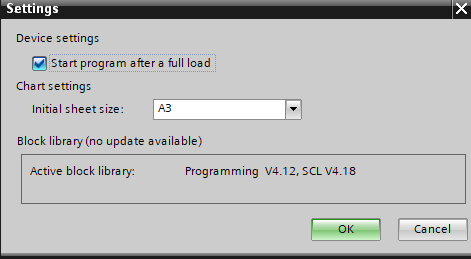

Device defaults
The Device defaults task allows you to define default settings for different field buses and field bus devices.
1 | Task selector | 2 | Device |
3 | BACnet tab | 4 | TX I/O tab |
5 | Modbus tab |
|
|
① Task selector
Task | Description |
|---|---|
Information | |
Address defaults | |
Device defaults | |
User profiles | |
Naming defaults | |
Localization | |
I/O assignment templates | |
Number ranges | |
Certificates |
② Device tab
Setting | Description |
|---|---|
Plant automation |
|
| Activates the function in the Programming editor. This is only valid for newly created devices. The default entry is cleared.  |
Activate to load the engineering data into the device. The Load > Engineering data menu becomes visible. | |
Pre-configuration definition | Displays project specific pre-configuration definition files which is applicable to the primary application from the standard library. |
 Start program after a full load
Start program after a full load

③ BACnet tab
Setting | Description |
|---|---|
| Indicates whether the BACnet object hierarchy is visible in the online system.
|
Notification classes will be used for new devices created in ABT Pro and ABT Site. The default notification class is Desigo. The notification classes can be changed at a later state in ABT Site for Desigo PXC4/5/7 devices in ABT Pro and room programming. In the Log tab, a message will be displayed. AMEV, Desigo and KBOB are visible and delivered by headquarter. If there are additional regional headquarters templates, the list will show those as well. Regional headquarters templates must be stored under: Note: In ABT Pro if device is added from Add device dialog, then notification class selected in ABT Site is taken as default. The devices which are added through libraries take the notification classes defined in the library (currently it shows Desigo’s contents). | |
A new notification class template can be imported into the project and automatically selected as a new default in the combo box. |
Setting IP | Description |
|---|---|
APDU retries | Specifies the number of retries when an APDU (Application Protocol Data Unit) transmission fails. |
APDU segment timeout (ms) | Specifies the timeout value in milliseconds from 1000 to 10000, when the APDU is sent in multiple segments. |
APDU timeout (ms) | Specifies the timeout value in milliseconds from 1000 to 10000, when the APDU can be sent in one transmission. |
Setting MS/TP | Description |
|---|---|
APDU retries | Specifies the number of retries when an APDU (Application Protocol Data Unit) transmission fails. |
APDU segment timeout (ms) | Specifies the timeout value in milliseconds from 1000 to 10000, when the APDU is sent in multiple segments. |
APDU timeout (ms) | Specifies the timeout value in milliseconds from 1000 to 10000, when the APDU can be sent in one transmission. |
④ TX I/O tab
Setting | Description |
|---|---|
Mains frequency | 50 Hz and 60 Hz. Default is 50 Hz. |
Table with preferred TX I/O module for each data type | Binary input. Default is TXM1.8D. Multistate input. Default is TXM1.8D. Analog input. Default is TXM1.8U. Analog output. Default is TXM1.8U. Binary output. Default is TXM1.6R. Multistate output. Default is TXM1.6R. Accumulator. Default is TXM1.8D. Power supply. Default is TXS12F10 |
⑤ Modbus tab
Setting | Description |
|---|---|
| When selected additional, advanced data points are displayed in the Add data point dialog in Engineering > Modbus. Note |